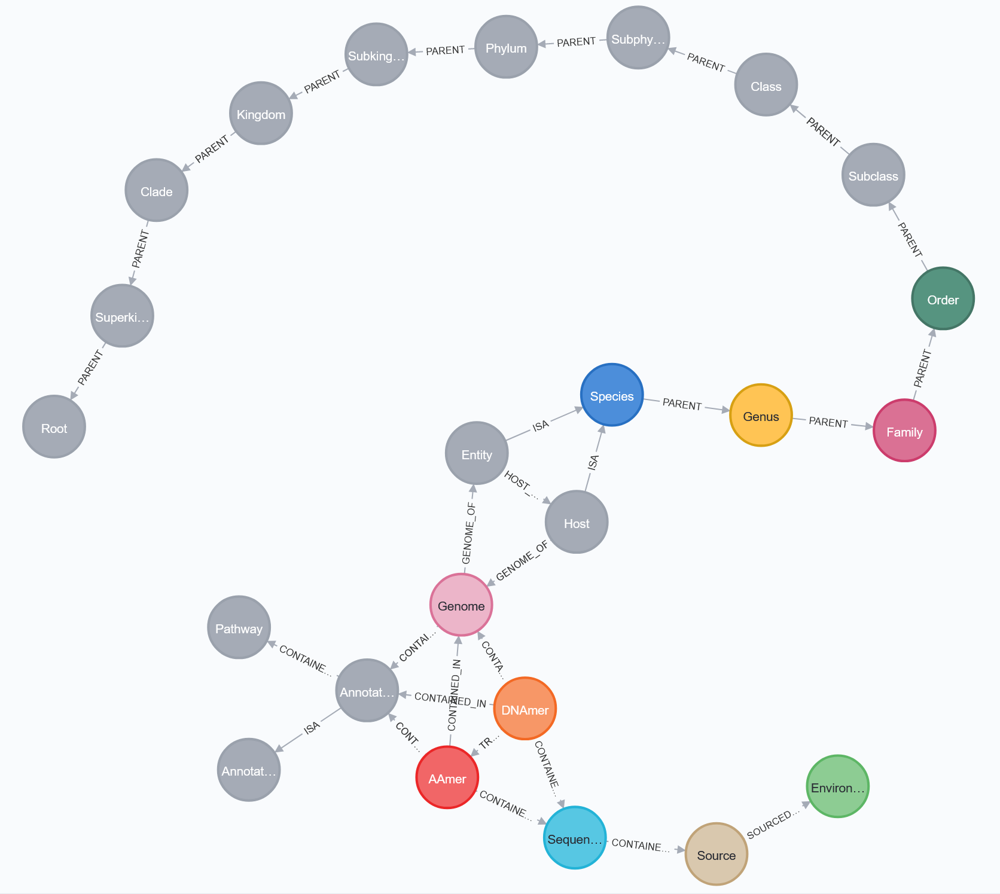

Representing Multiomics Graphs with MetaGraphs
TODO: talk through what this enables
- example queries that would be challenging to do without this knowledge network

//pan-meta-genome-graph-with-annotations
CREATE (dnamer:DNAmer {label: "DNAmer"})
CREATE (sequence:Sequence {label: "Sequence"})
CREATE (aamer:AAmer {label: "AAmer"})
CREATE (source:Source {label: "Source"})
CREATE (environment:Environment {label: "Environment"})
CREATE (genome:Genome {label: "Genome"})
CREATE (species:Species {label: "Species"})
CREATE (genus:Genus {label: "Genus"})
CREATE (family:Family {label: "Family"})
CREATE (order:Order {label: "Order"})
CREATE (subclass:Subclass {label: "Subclass"})
CREATE (class:Class {label: "Class"})
CREATE (subphylum:Subphylum {label: "Subphylum"})
CREATE (phylum:Phylum {label: "Phylum"})
CREATE (subkingdom:Subkingdom {label: "Subkingdom"})
CREATE (kingdom:Kingdom {label: "Kingdom"})
CREATE (clade:Clade {label: "Clade"})
CREATE (superkingdom:Superkingdom {label: "Superkingdom"})
CREATE (root:Root {label: "Root"})
CREATE (annotation:Annotation {label: "Annotation"})
CREATE (entity:Entity {label: "Entity"})
CREATE (pathway:Pathway {label: "Pathway"})
CREATE (annotationclass:AnnotationClass {label:"AnnotationClass"})
CREATE (host:Entity {label: "Host"})
CREATE (entity)-[entity_host:HOST_OF]->(host)
CREATE (annotation)-[annotation_annotationclass:ISA]->(annotationclass)
CREATE (host)-[host_species:ISA]->(species)
CREATE (host)-[host_genome:GENOME_OF]->(genome)
CREATE (dnamer)-[dnamer_annotation:CONTAINED_IN]->(annotation)
CREATE (aamer)-[aamer_annotation:CONTAINED_IN]->(annotation)
CREATE (genome)-[genome_annotation:CONTAINED_IN]->(annotation)
CREATE (superkingdom)-[superkingdom_root:PARENT]->(root)
CREATE (clade)-[clade_superkingdom:PARENT]->(superkingdom)
CREATE (kingdom)-[kingdom_clade:PARENT]->(clade)
CREATE (subkingdom)-[subkingdom_kingdom:PARENT]->(kingdom)
CREATE (phylum)-[phylum_subkingdom:PARENT]->(subkingdom)
CREATE (subphylum)-[subphylum_phylum:PARENT]->(phylum)
CREATE (class)-[class_subphylum:PARENT]->(subphylum)
CREATE (subclass)-[subclass_class:PARENT]->(class)
CREATE (order)-[order_subclass:PARENT]->(subclass)
CREATE (family)-[family_order:PARENT]->(order)
CREATE (genus)-[genus_family:PARENT]->(family)
CREATE (species)-[species_genus:PARENT]->(genus)
CREATE (entity)-[entity_species:ISA]->(species)
CREATE (dnamer)-[dnamer_genome:CONTAINED_IN]->(genome)
CREATE (source)-[source_environment:SOURCED_FROM]->(environment)
CREATE (sequence)-[sequence_source:CONTAINED_IN]->(source)
CREATE (aamer)-[aamer_sequence:CONTAINED_IN]->(sequence)
CREATE (dnamer)-[dnamer_sequence:CONTAINED_IN]->(sequence)
CREATE (dnamer)-[dnamer_aamer:TRANSLATES_TO]->(aamer)
CREATE (aamer)-[aamer_genome:CONTAINED_IN]->(genome)
CREATE (genome)-[genome_entity:GENOME_OF]->(entity)
CREATE (annotation)-[annotation_pathway:CONTAINED_IN]->(pathway)
RETURN dnamer,
sequence,
aamer,
source,
environment,
genome,
species,
genus,
family,
order,
subclass,
class,
subphylum,
phylum,
subkingdom,
kingdom,
clade,
superkingdom,
root,
annotation,
entity,
pathway,
annotation_pathway,
annotationclass,
host,
entity_host,
annotation_annotationclass,
host_species,
host_genome